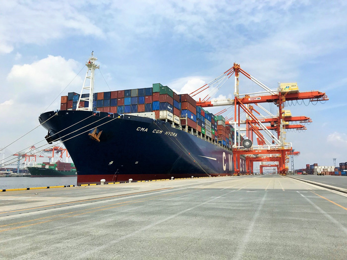

YOKOHAMA is best place in Japan
- 住みたい街ランキング１位
- 日本最大の港町
- デートスポット
ファミリー × ビジネスマン × カップルを魅了する街 "横浜"
住みたい街ランキング１位
SUUMO実施の住みたい街ランキング2020において、堂々の１位を獲得。 観光の街から、住む街へ進化を遂げている。

日本最大の港町
1854年にペリー艦隊一行が横浜港に来航してから、今年で166年。いまや横浜港は日本最大の貿易港として栄え、
海外の玄関口を担っている。今後もますます、ビジネスマンを魅了する街へと進化していくことだろう。

デートスポット
日本最大のデートスポットとして盤石の地位を確立。赤レンガ倉庫・大桟橋・山下公園など定番のデートスポットが
所狭しにひしめきあっている。